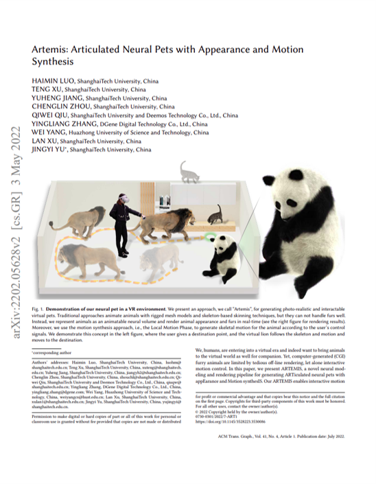

| ShanghaiTech University | Deemos | DGene | Huazhong University of Science and Technology |
Abstract
We human are entering into a virtual era, and surely want to bring animals to virtual world as well for companion. Human are entering into a virtual era, while our companions, i.e., animals, are left bind. Yet, computer-generated (CGI) furry animals is limited by tedious off-line rendering, let alone interactive motion control. Computer-generated (CGI) furry animals is limited by tedious off-line rendering, and hence impractical for interactive motion control. In this paper, we present ARTEMIS, a novel neural modeling and rendering pipeline for generating ARTiculated neural pets with appEarance and Motion synthesIS. Our ARTEMIS enables interactive motion control, real-time animation and photo-realistic rendering of furry animals. The core of our ARTEMIS is a neural-generated (NGI) animal engine, which adopts an efficient octree based representation for animal animation and fur rendering. The animation then becomes equivalent to voxel level deformation based on explicit skeletal warping. We further use a fast octree indexing an efficient volumetric rendering scheme to generate appearance and density features maps. Finally, we propose a novel shading network to generate high-fidelity details of appearance and opacity under novel poses from appearance and density feature maps. For the motion control module in ARTEMIS, we combines state-of-the-art animal motion capture approach with recent neural character control scheme. We introduce an effective optimization scheme to reconstruct skeletal motion of real animals captured by a multi-view RGB and Vicon camera array. We feed all the captured motion into a neural character control scheme to generate abstract control signals with motion styles. We further integrate ARTEMIS into existing engines that support VR headsets, providing an unprecedented immersive experience where a user can intimately interact with a variety of virtual animals with vivid movements and photo-realistic appearance. Extensive experiments and showcases demonstrate the effectiveness of our ARTEMIS system to achieve highly realistic rendering of NGI animals in real-time, providing daily immersive and interactive experience with digital animals unseen before.
Overview
Given multi-view RGBA images of traditional modeled animals rendered in canonical space, we first extract a sparse voxel grid and allocate a corresponding feature look-up table as a compact representation, together with an octree for quick feature indexing. Then we pose the character to training poses using the rig of the traditional animal asset and conduct efficient volumetric rendering to generate view-dependent appearance feature maps and coarse opacity maps. We next decode them into high quality appearance and opacity images with the convolutional neural shading network. We further adopt an adversarial training scheme for high frequency details synthesis.

Results
We show our synthesized RGBA results of different neural volumetric animals in representative motions.
Interactive NGI Animals in VR
we exhibit our rendering results in VR applications including different level interactions and different perspectives. First line ‘viewing’ shows the vivid virtual panda we observed from the third and first view(VR headset), respectively. We can clearly see good fur effects even in VR headsets. Second line ‘Instructions’ shows the low-level control animation results. We can explicitly drive our neural pets using control signals like ‘Jump’,‘Move’ and ‘Sit’. ‘Commands’ illustrates our high level control patterns ‘Go to’. The user points to a 3D location in virtual space and the wolf reaches the target destination automatically. We can also call back the wolf by waving. Note that the speed of the movement is also controlled by user. In ‘Companion’, our virtual pet will follow and accompany the user like a real pet. Finally, ‘Exploring’ shows our free mode, when no command is given, the animal can take any reasonable movements, exploring the virtual world themselves.
Paper
|  | Artemis: Articulated Neural Pets with Appearance and Motion Synthesis |
Code
|
We will make available our models and dynamic animal datasets for further research.
[code] |
Acknowledgements
The authors would like to thank Junyu Zhou and Ya Gao from DGene Digital Technology Co., Ltd. for processing the CGI animals models and motion capture data. Besides, we thank Zhenxiao Yu and Heyang Li from ShanghaiTech University for producing a supplementary video and figures.
This work was supported by NSFC programs (61976138, 61977047), the National Key Research and Development Program (2018YFB2100500), STCSM (2015F0203-000-06) and SHMEC (2019-01-07-00-01-E00003).
Citation
If you find our code or paper helps, please consider citing:
@article{luo2022artemis,
title={Artemis: Articulated Neural Pets with Appearance and Motion synthesis},
author={Luo, Haimin and Xu, Teng and Jiang, Yuheng and Zhou, Chenglin and Qiu, QIwei and Zhang, Yingliang and Yang, Wei and Xu, Lan and Yu, Jingyi},
journal={arXiv preprint arXiv:2202.05628},
year={2022}
}
And also consider citing another related and intresting work for high-quality photo-realistic rendering of real fuzzy objects: Convolutional Neural Opacity Radiance Fields:
@INPROCEEDINGS {9466273,
author = {H. Luo and A. Chen and Q. Zhang and B. Pang and M. Wu and L. Xu and J. Yu},
booktitle = {2021 IEEE International Conference on Computational Photography (ICCP)},
title = {Convolutional Neural Opacity Radiance Fields},
year = {2021},
volume = {},
issn = {},
pages = {1-12},
keywords = {training;photography;telepresence;image color analysis;computational modeling;entertainment industry;image capture},
doi = {10.1109/ICCP51581.2021.9466273},
url = {https://doi.ieeecomputersociety.org/10.1109/ICCP51581.2021.9466273},
publisher = {IEEE Computer Society},
address = {Los Alamitos, CA, USA},
month = {may}
}
Haimin Luo
Master Candidate
My research interests include Neural Modeling and Rendering, 3D Reconstruction, Motion Capture and Animation.